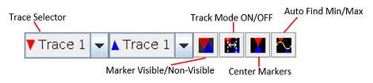
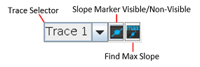
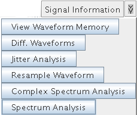

Tool Bars
The main window of the Signal Analyzer provides toolbars for viewing and modifying waveforms, setting cursor functions, and setting marker functions in the Waveform Graphs Tool (WGT).
The following toolbars are available:
- Graph Customization
- Hardware Access
- Cursor
- Marker
- Slope Marker
- User Defined Functions
In the View menu, these toolbars are selected for viewing in the main window.
Graph Customization
Format - The context information such as title, axis label, axis unit, and user comment can be specified with this function.
Auto Scale - All waveforms in the selected Data Display Panel are auto scaled (horizontally, vertically, or both).
Zoom In/Out - Zoom in/out on selected Data Display Panel in the Waveform Graphs Tool.
Hardware Access
Download (Waveform) - The Download Waveform function enables you to download a waveform you have defined using the Signal Analyzer to the AWG's memory. You must specify a target trace ID.
Download (Vector) - The Download Vector function enables you to download the generated waveform to the vector memory. The vector memory stores the digital data required for DAC tests. A typical application of this function is to convert a sinewave created by the Generate function to digital code, and use this as the input for a DAC during a distortion test. You must specify a target trace ID.
Download (DSM) - This function activates the DSMT (DAC Source Memory Tool), which generates a vector setup to test chips with embedded DAC. It allows to specify DAC vectors independent of digital vectors. You must specify a target trace ID.
Upload (New Window) - Selected waveform is placed in a new selected graph table in the WNT and the waveform is displayed in a new Data Display Panel of the WGT.
Upload (Overwrite) - Selected waveform is placed in a new selected graph table in the Waveform Navigator Tool (WNT), the waveform is displayed in the selected Data Display Panel of the WGT, and any previous waveforms will be cleared.
Upload (Overlay) - Selected waveform is placed in a new selected graph table in the WNT, the waveform is displayed in the selected Data Display Panel of the WGT, and any previous waveforms will not be cleared.
Cursor Functions

Axis Selector (X Axis ID) - If the selected Data Display Panel has multiple x-axes, you need to specify on which x-axis the cursors are placed. The positions of "X Reference Cursor" and "X Measure Cursor" are displayed based on the specified axis ID.
Axis Selector (Y Axis ID) - If the selected Data Display Panel has multiple y-axes, you need to specify which y-axis the cursors are put on. The positions of "Y Reference Cursor" and "Y Measure Cursor" are displayed based on the specified axis ID.
Cursor Visible/Non-visible - You can make the cursors visible or non-visible by this button.
X Track Mode - If the "X Track Mode" is on, the "X Reference Cursor" and "X Measure Cursor" will be synchronized. This means the width between these cursors becomes constant all the time.
Y Track Mode - If the "Y Track Mode" is on, the "Y Reference Cursor" and "Y Measure Cursor" will be synchronized. This means the width between these cursors becomes constant all the time.
Center Cursor - This button allows you to move the cursors at the center of graph.
Marker Functions

Trace Selector (Trace ID) - If the selected Data Display Panel has multiple traces (overlaid waveforms), you need to specify on which trace the markers are placed. The displayed positions of the "Up Marker" and "Down Marker" are based on the specified trace ID.
Marker Visible/Non-visible - Make the markers visible or non-visible using this function.
Track Mode - If the "Track Mode" is on, the "Up Marker" and "Down Marker" will be synchronized. This means the width between these markers becomes constant at all times.
Center Marker - This function allows you to move the markers to the center of the graph.
Auto Find Min/Max - This function allows you to find the min/max of the trace and move the markers to those positions.
Slope Marker Functions

Trace Selector (Trace ID) - If the selected Data Display Panel has multiple traces (overlaid waveforms), you need to specify on which trace the slope marker is placed.Slope Marker Visible/Non-Visible - This function allows you to make the slope marker visible or non-visible.
Find Max Slope - This function allows you to find the max slope of the trace and move the slope marker to the position.
User Defined Functions

FFT - This function allows you to apply FFT to the displayed waveforms of the selected Data Display Panel.
SND/SNR/THD - These functions are accessed by clicking the Spectrum Analysis button. These functions allow you to calculate signal-to-noise plus distortion (SND), signal-to-noise ratio (SNR), and total harmonic distortion (THD) on the specified waveform. When a function is selected, the User Configurable Dialog Box appears allowing you to specify the trace ID.
Mean/Stddev - These functions are accessed by clicking the Signal Information button. These functions allow you to calculate mean and standard deviation of the specified waveform. When a function is selected, the User Configurable Dialog Box appears allowing you to specify the trace ID.
RMS - This function is accessed by clicking the Signal Information button. This function allows you to calculate root mean square (RMS) of the specified waveform. When this function is selected, the User Configurable Dialog Box appears allowing you to specify the trace ID.
Jitter - This function is accessed by clicking the Jitter Analysis button. This function allows you to calculate jitter of the specified waveform. When this function is selected, the User Configurable Dialog Box appears allowing you to specify the trace ID.
Diff. Waveforms - This function is accessed by clicking the Diff. Waveforms button. This function allows you to calculate the difference between specified waveforms and display it to the selected Data Display Panel. When this function is selected, the User Configurable Dialog Box appears allowing you to specify the trace ID.
Auto Scale - This function scales the waveforms in a Data Display Panel to fit into one display.
Clear - This function deletes all traces displayed in the selected graph.
Copy - This function copies the specified trace of selected graph.
Paste - This function pastes the copied trace (using Copy) into selected graph.
Edit Trace - This function allows you to edit the data of the specified trace using a default editor. The environment variable EDITOR should be set first shown as the following example.
export EDITOR=/usr/X11R6/bin/nedit
In this example, the Trace Editor is set to be the NEdit tool. You must restart SmarTest in order that this EDITOR variable takes effect.
Show Histogram - This function calculates the histogram of the specified waveform and display in a new graph.
View Waveform Memory - This function allows you to view the waveform stored in waveform memory of arbitrary analog modules.
Functional changes
- Introduced before SmarTest 6.3.2
- SmarTest 6.5.3: The size of the waveform, which is analyzed using FFT, can be any integer.